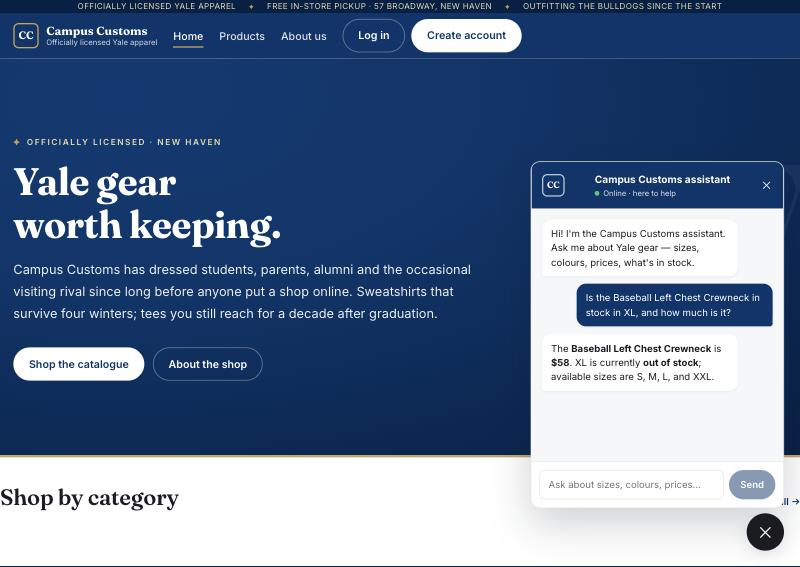
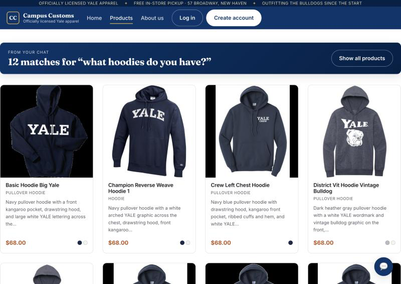
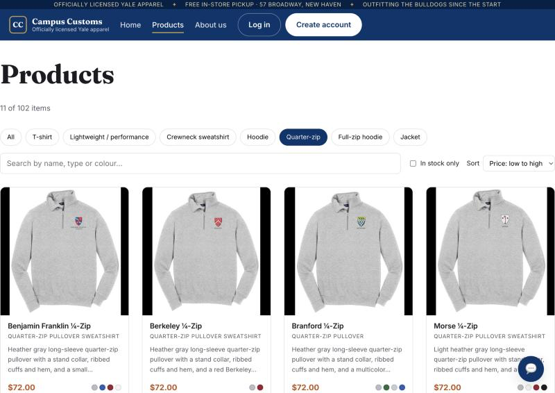

1Chat reports honest stock & price from the database
A shopper asks the assistant about a specific item and size. The reply comes from live database lookups, not guesses.

2A category question updates the page with dynamic product cards
Asking the chat about a product type renders the matching items on the storefront as clickable cards.

3Usability feature: browse controls (filter, search, sort)
A Problem 9 improvement that makes 102 items easy to narrow down.

11 of 102 items), sorted by price, with a
live search box and an “In stock only” toggle. The category chips come from the price-tier taxonomy built in Problem 2.
This proves the browse controls work end to end and make the catalogue genuinely shoppable.